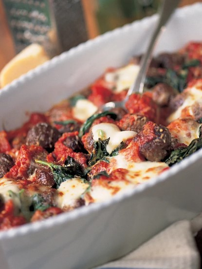

Jamie Olivers Meatballs
Ingredients
- 800 g quality lean meat , for mincing, or bought minced meat
- 2 slices of bread
- ½ teaspoon cumin seeds
- ½ a small dried red chilli
- 1 sprig of fresh rosemary
- 2 level tablespoons dried oregano
- 1 large free-range egg yolk
- olive oil
- 1 x Basic tomato sauce
- 2 handfuls of fresh basil
- 60 g mozzarella cheese
- 60 g Parmesan cheese
OPTIONAL
- 1 onion
- 1 clove of garlic
- olive oil
- 1 level tablespoon Dijon mustard
Instructions
- If your meat is not already minced, whiz it up in a food processor to the required consistency and place it in a bowl.
- Use the food processor to turn the bread into breadcrumbs, then add to the meat.
- Bash up the cumin seeds and dried chilli in a pestle and mortar, and pick and finely chop the rosemary leaves. Add to the mince with the dried oregano and egg yolk. Season well with sea salt and black pepper.
- At this stage you could add your optional ingredients (peeling and finely chopping the onion and garlic first, then cooked together gently in 1 tablespoon of oil until tender and allowed to cool).
- Mix well, and, with wet hands, roll and pat into meatballs the size and shape you want (cook straight away or put on greaseproof paper and refrigerated for up to a day.)
- Preheat the oven to 200°C and heat a thick-bottomed casserole pan on the hob.
- Swirl 4 tablespoons of oil around the pan and add your meatballs. Fry until brown all over, being careful not to break them up.
- Turn the heat down and cover with the Basic tomato sauce, pick the basil leaves and tear in fresh basil, tear over the mozzarella and finely grate over the Parmesan.
- Cook in the oven for about 15 to 20 minutes, or until the cheese is golden.